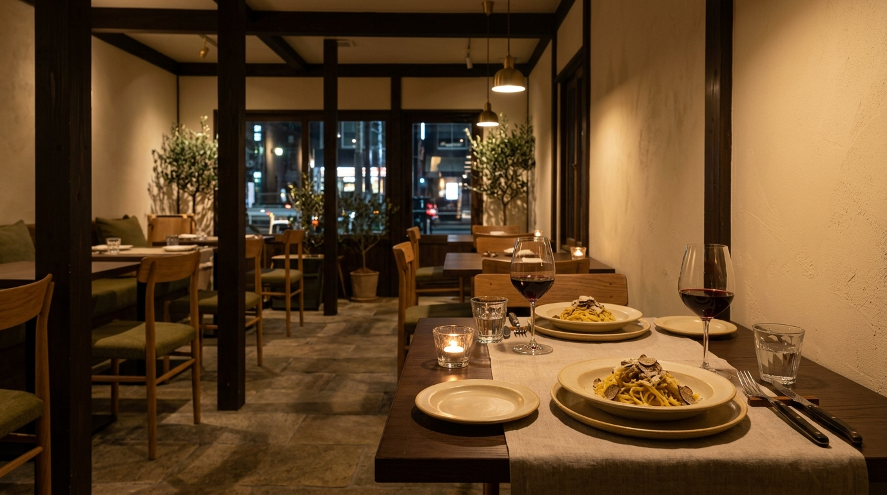
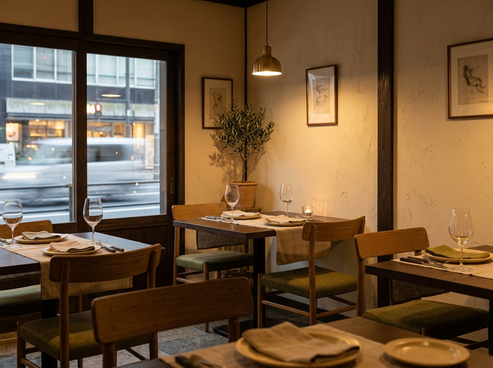
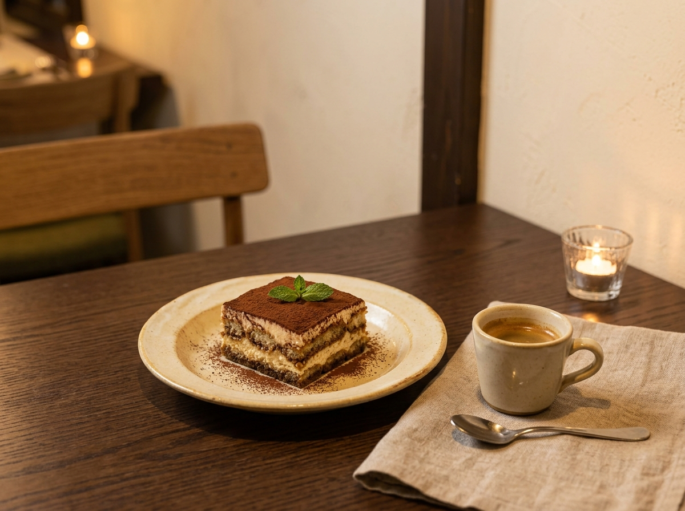
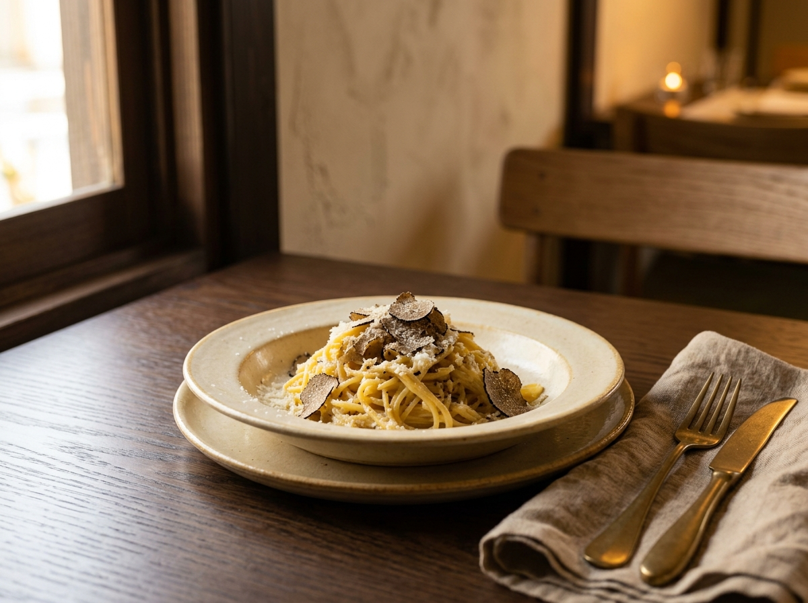
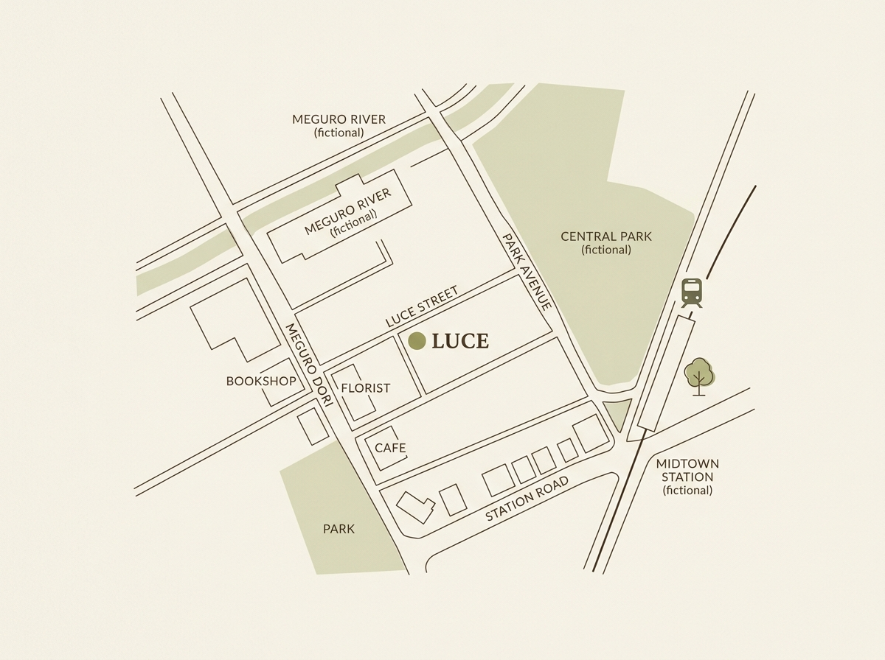

日常に、ひとさじのイタリア。
LUCEは、季節の食材とイタリアの味わいを楽しむ
小さなイタリアンレストランです。
香り豊かなパスタや料理、食後のドルチェまで。
木の温もりを感じる空間で、ゆっくりとした時間をお過ごしください。







LUCE Italian Restaurant
〒000-0000
東京都○○区○○ 0-0-0
○○駅より徒歩5分
Lunch 11:30 - 15:00
Dinner 17:30 - 22:00
Closed : Tuesday